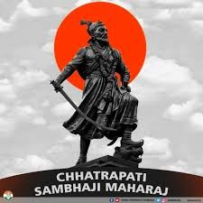

This image is Tribute for the grate Shambhaji Maharaj. A fearless warrior, a visionary leader — Chhatrapati Sambhaji Maharaj stood unshaken against tyranny. His valor and sacrifice continue to ignite the spirit of Swarajya in every heart.
1657: Born at Purandar fort to Shivaji Maharaj and Saibai.
Early Years: Raised by his grandmother, Jijabai, after his mother's death.
1666-1668: Accompanied his father to Agra to meet with Aurangzeb.
1670s: Married Jivubai, who took the name Yesubai, in a political alliance.
1678: Imprisoned by his father at Panhala Fort.
1680: Became Chhatrapati after his father's death.
1680-1689: Reign as Chhatrapati, marked by military campaigns and political conflicts with the Mughals.
1689: Captured by Mughal forces, tortured, and executed.